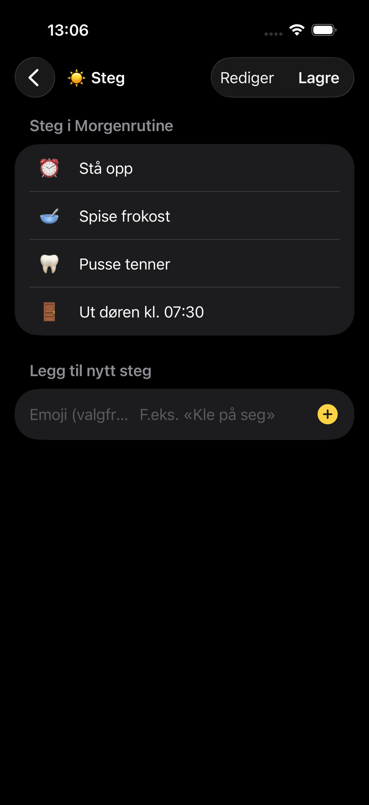
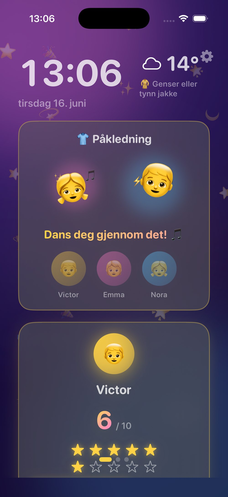

School mornings have a special kind of chaos.
One child cannot find their socks. Another is still in pajamas. Someone forgot their backpack. Breakfast is half-eaten, teeth are not brushed, and you are already watching the clock.
Most parents do not start the morning wanting to yell. It happens because the same instructions have been repeated too many times: get dressed, brush your teeth, eat breakfast, pack your bag, put your shoes on.
The problem is not that kids are trying to make mornings difficult. The problem is often that the routine lives entirely inside the parent’s head.
A calmer morning starts when the routine becomes visible.
Why mornings get chaotic
Mornings are hard because they combine time pressure, transitions, tired kids and tired adults. Children are expected to move through several steps quickly, often before they are fully awake.
For adults, “get ready for school” is one simple instruction. For kids, it is actually a chain of smaller tasks:
- Wake up
- Get dressed
- Eat breakfast
- Brush teeth
- Pack bag
- Put on shoes
- Leave on time
When that chain is only spoken out loud, the parent becomes the reminder system. That means every forgotten step becomes another verbal prompt.
And when prompts are repeated enough times, they start to sound like nagging — even when they are completely reasonable.
Want calmer days like this? Start with OurFamilyHub — it’s free.
Download on the App StoreWhy visual routines work better than verbal reminders

A visual routine gives children something concrete to follow.
Instead of waiting for a parent to say the next thing, the child can look at the routine and see what comes next. This changes the dynamic from “parent pushes child through the morning” to “child follows the plan.”
That matters because children often respond better to visible progress than repeated instructions. A routine they can see becomes less abstract. A completed step gives a small sense of achievement. And when there is a simple reward system attached, the routine becomes more motivating.
The goal is not to make mornings perfect. The goal is to reduce the number of moments where the parent has to carry the entire process alone.
A simple 5-step school morning routine
The best morning routine is not complicated. Start with five steps.
1. Get dressed
Make this the first visible win of the day. Clothes on before breakfast can help reduce last-minute panic.
2. Eat breakfast
Keep it simple. This is not the time for too many choices.
3. Brush teeth
This step is easy to forget because it often happens in another room. Put it clearly on the routine.
4. Pack bag
Lunchbox, homework, water bottle, gym clothes — whatever your family needs.
5. Shoes and out the door
The final step should be specific. “Get ready” is vague. “Shoes on” is clear.
Once these steps are visible, children can follow the sequence without needing every instruction repeated out loud.
How rewards can support independence

Rewards work best when they support progress, not pressure.
A star system can help children feel ownership of the routine. They are not just being told what to do — they are completing steps, collecting stars and seeing their own progress.
This is especially useful in the morning because the reward does not need to be big. It can be as simple as earning stars toward a weekend treat, choosing Friday’s movie, extra story time, screen time, a small prize or pocket money.
The key is that the reward should feel positive. It should not become a threat. The message is not “do this or else.” The message is “you are learning to manage your own morning, and that is worth celebrating.”
OurFamilyHub turns these ideas into a simple board your kids can actually follow.
Download on the App StoreHow to use a family board
A family board makes the routine visible to everyone.
With OurFamilyHub, parents set up routines from their iPhone, while an iPad or spare device can become the family board. Kids can see what needs to happen, follow the morning steps and earn stars as they complete routines and tasks.
The board can also show useful daily information like weather, tasks and today’s plan, so the morning does not depend on one parent remembering everything.
A visible family board helps answer the question children ask every day, even when they do not say it out loud:
“What am I supposed to do next?”
Make tomorrow morning easier
You do not need a perfect system to have a better morning. Start with one simple routine. Make it visible. Keep the steps short. Celebrate progress.
Over time, the goal is not just a smoother school run. It is helping children feel more capable and helping parents carry less of the morning alone.